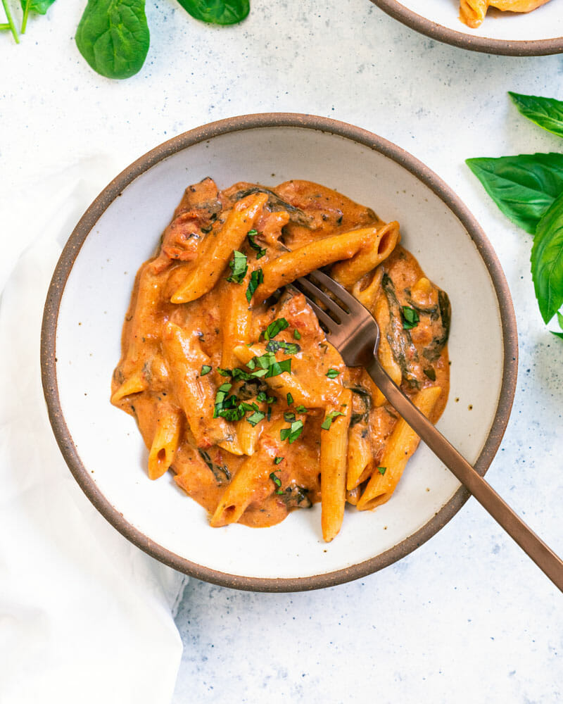

Instant Pot Goat Cheese Pasta

Easy, creamy goat cheese pasta that serves a lot of people.
Ingredients
- 1 ½ cups water
- 28 ounce can crushed fire roasted tomatoes (or best quality crushed tomatoes)
- 2 tablespoons olive oil
- 1 tablespoon balsamic vinegar
- 2 teaspoons garlic powder
- 1 teaspoon dried oregano
- 1 teaspoon kosher salt
- 2 cups baby spinach leaves, tightly packed (or chopped spinach)
- 8 fresh basil leaves
- 8 ounces penne pasta (regular, not whole wheat)
- 4 ounce goat cheese log
Steps
- Place the following ingredients into the Instant Pot: water, tomatoes, olive oil, balsamic vinegar, garlic powder, oregano, kosher salt, spinach, whole basil leaves, and penne. Stir until combined.
- Cook on high pressure for 5 minutes: Press the Pressure Cook button, making sure the “High Pressure” setting is selected, and set the time. Note that it takes about 10 minutes for the pot to “preheat” and come up to pressure before it starts cooking. (During cooking, avoid touching the metal part of the lid.)
- Quick release: Vent the remaining steam from the Instant Pot by moving the pressure release handle to “Venting”, covering your hand with a towel or hot pad. Never put your hands or face near the vent when releasing steam. Open the pressure cooker lid.
- Open the lid and crumble in the goat cheese; stir until a creamy sauce forms. The sauce will thicken even more as it cools.